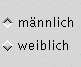
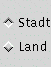
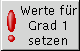

|
Spezies auswählen:
Über dieses Menü wird die Spezies ausgewählt (Voreingestellt: Mensch). |
|
 |
Wahl des Würfelverfahrens
Da unter Windows die Maustasten nicht einheitlich behandelt werden und nicht immer eine
dritte Maustaste vorhanden ist, kann über diese Radiobuttons das Würfelverfahren ausgwählt werden (über Optionen abschaltbar) |
|
 |
Grundwerte Würfeln:
Auswürfeln der Grundwerte:
Stärke, Geschicklichkeit, Gewandtheit, Konstitution, Intelligenz und Zaubertalent
Es stehen drei Verfahren zur Auswahl:
|
linke Maustaste:
Es wird für jede Eigenschaft 2x gewürfelt und der höhere Wert automatisch übernommen (Standard)
|
mittlere Maustaste:
Es wird pro Eigenschaft 2x gewürfelt, der höhere Wurf wird von Hand einer
Eigenschaft zugewiesen
|
rechte Maustaste:
Es wird 9x Gewürfelt, die 6 besten Würfe werden auf die Eigenschaften verteilt |
|
|
|  |
Geschlecht auswählen:
Auswahl des Geschlecht des Abenteurers, bzw. der Abenteurerin. |
|
 |
Abenteurertyp auswählen:
Über dieses Menü wird der Abenteurertyp ausgewählt. Die mögliche Auswahl richtet sich nach der gewählten Spezies
(Voreingestellt: Assassine wenn Mensch). |
|
|  |
Herkunft auswählen:
Die Herkunft (Stadt/Land) des Abentuerers wird ausgewählt |
|
 |
Abgeleitete Werte:
Die abgeleiteten Werte werden ausgewürfelt und berechnet. |
|
 |
Werte editieren:
Die zuvor bestimmten Werte (im Wertebereich) können zum größten Teil individuell verändert
werden. Alternativ besteht hier die Möglichkeit, die Werte von vorneherin an per Hand einzugeben. |
Werte für Grad 1 Setzen
Werden Eigenschaftswerte oder abgeleitete Werte verändert oder eingegeben, so werden abhängige Werte erst über diesen Button
(für Grad 1!) korrekt gesetzt.
Dieser Button ist nur sichtbar, wenn "Werte editieren" aktiviert ist, |
Im Werte-Fenster werden die bereits gesetzten Werte angezeigt. Die Felder, für die noch keine Werte
vorhanden sind. bleiben leer.
Durch das Anwählen des Buttons 'Werte editieren' werden die Felder im Wertebereich editierbar.